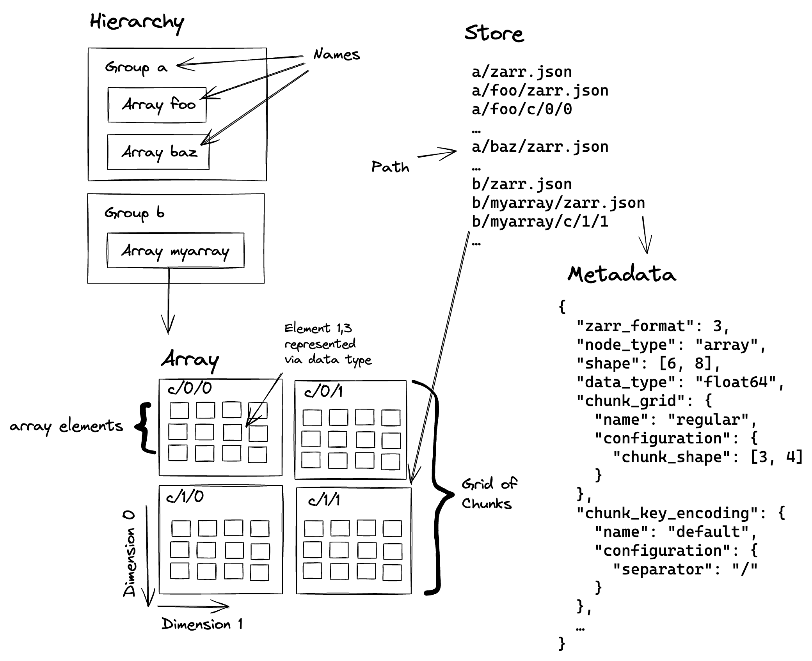

1 · Sharding
Many small chunks, few storage objects
Random access of small chunks with the storage footprint of large ones.

Sharding packs thousands of chunks into a single storage object. HPC users escape inode limits, cloud users escape per-object overhead. Readers fetch only the bytes they need via byte-range requests, so random access stays fast.
2 · Virtualization
Read archival files as one Zarr dataset
No conversion, no copies. Point at NetCDF4, HDF5, GRIB, GeoTIFF.

VirtualiZarr scans existing files and builds a virtual manifest pointing at them. Icechunk commits these manifests transactionally, so updates are atomic and rollbacks safe. xarray reads across the whole archive as a single Zarr dataset.
3 · Variable chunk grids
One array, many chunk sizes
Match chunk size to data density. Fine where it matters, coarse where it doesn't.

Just landed in zarr-python. A Zarr array can now have non-uniform chunks along any axis. Use fine chunks at recent timestamps and coarse chunks for older history. Faster reads where activity concentrates, less storage overall.
4 · In-browser rendering
Render multi-terabyte datasets in the browser
Stream Zarr chunks straight to the GPU. No server, no pre-rendered tiles.

Zarrita.js reads Zarr chunks directly from a browser fetch. deck.gl-raster pushes them onto the GPU. Result: pan, zoom, and recolor a multi-terabyte dataset interactively, on a laptop, with no rendering pipeline behind you.